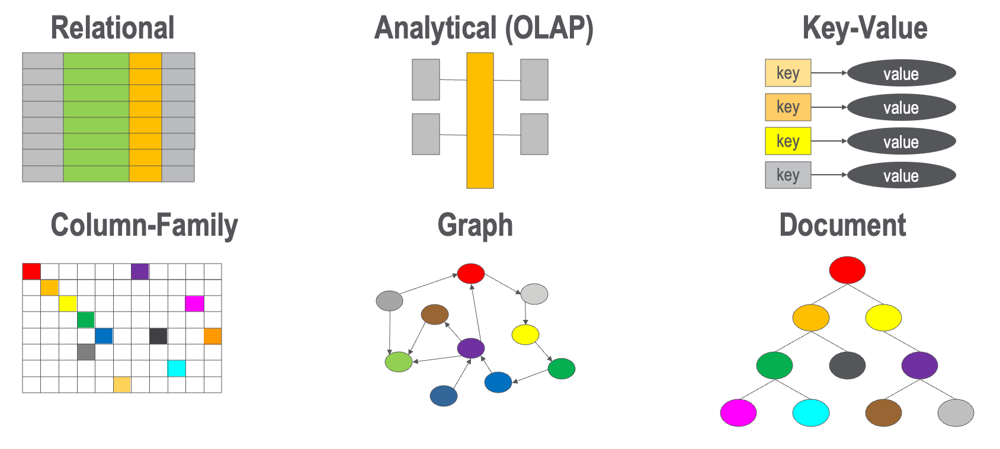

Database Architecture Types
In this section, we will cover the six key database architecture types we use when selecting the right database architecutre.

The six types are:
- Relational
- Analytical (OLAP Cubes)
- Key Value Stores
- Column Family Stores
- Graph
- Document
Each of these database architectures have many sub-types and each of these have pros and cons for different applications.
It today's AI-driven world, graphs have become a major force. We will cover this topic in the next section.
Here is a brief overview of these six database architecture patterns:
Relational or OLTP
Relational databases use structured tables with predefined schemas to store data in rows and columns. They enforce ACID (Atomicity, Consistency, Isolation, Durability) properties and use SQL for querying. These databases excel at maintaining data integrity and supporting complex transactions, making them ideal for applications requiring strict consistency like financial systems, e-commerce transactions, and enterprise resource planning.
Key Characteristics:
- Structured schema with enforced relationships
- ACID compliance for transaction reliability
- SQL-based querying with complex joins
- Vertical scaling (scaling up with more powerful hardware)
- Strong consistency guarantees
Best Use Cases: Financial transactions, inventory management, user authentication systems, order processing, and any application requiring immediate consistency and complex relational queries.
Examples: PostgreSQL, MySQL, Oracle Database, Microsoft SQL Server
Analytical or OLAP
Online Analytical Processing (OLAP) databases are optimized for complex analytical queries and reporting rather than transaction processing. They use multidimensional data models organized into cubes that enable fast aggregation and slice-and-dice operations across large datasets. OLAP systems typically handle the "Volume" challenge by using column-oriented storage and pre-computed aggregations.
Key Characteristics:
- Columnar storage for efficient analytical queries
- Pre-computed aggregations and materialized views
- Optimized for read-heavy analytical workloads
- Multidimensional data modeling (facts and dimensions)
- Excellent compression ratios
Best Use Cases: Business intelligence, data warehousing, financial reporting, sales analytics, trend analysis, and any scenario requiring complex aggregations across large historical datasets.
Examples: Amazon Redshift, Google BigQuery, Snowflake, Apache Druid, ClickHouse
Key Value Stores
Key-value stores represent the simplest NoSQL model, storing data as unique key-identifier pairs with associated values. They excel at handling "Velocity" challenges by providing extremely fast read and write operations with minimal overhead. The simplicity of their data model enables horizontal scaling and high-performance caching scenarios.
Key Characteristics:
- Simple key-value data model
- Extremely fast read/write operations
- Horizontal scaling across distributed nodes
- Eventually consistent (though some offer strong consistency)
- Minimal query capabilities beyond key lookups
Best Use Cases: Session storage, caching layers, user preferences, shopping carts, real-time recommendations, gaming leaderboards, and any application requiring sub-millisecond response times for simple data retrieval.
Examples: Redis, Amazon DynamoDB, Apache Cassandra (as key-value), Riak, Amazon ElastiCache
Column Family Stores
Column family databases store data in column families (similar to tables) but organize data by columns rather than rows. They handle both "Volume" and "Velocity" challenges effectively by enabling efficient compression, supporting sparse data structures, and providing excellent write performance. Each row can have different columns, providing flexibility similar to document stores.
Key Characteristics:
- Column-oriented storage within rows
- Sparse data support (not all rows need all columns)
- Excellent write performance and compression
- Flexible schema within column families
- Horizontal scaling with eventual consistency
Best Use Cases: Time-series data, IoT sensor data, logging systems, content management, social media feeds, and applications with high write volumes and varying data structures per record.
Examples: Apache Cassandra, HBase, Amazon SimpleDB, Google Bigtable
Graph
Graph databases store data as nodes (entities) and edges (relationships), making them ideal for handling complex interconnected data. They excel at traversing relationships and can address "Variability" challenges by supporting flexible node properties while maintaining "Veracity" through relationship constraints. Graph databases are becoming increasingly important for AI applications, knowledge graphs, and recommendation systems.
Key Characteristics:
- Nodes and edges data model
- Efficient relationship traversal
- Flexible properties on nodes and edges
- Specialized query languages (Cypher, Gremlin)
- ACID properties for graph operations
Best Use Cases: Social networks, fraud detection, recommendation engines, knowledge graphs, supply chain analysis, network topology, AI/ML feature engineering, and any application requiring complex relationship analysis.
Examples: Neo4j, Amazon Neptune, TigerGraph, Memgraph
Document
Document databases store data in flexible, schema-free documents (typically JSON, BSON, or XML). They excel at handling "Variability" challenges by allowing different document structures within the same collection. Document stores provide a balance between the flexibility of key-value stores and the queryability of relational databases.
Key Characteristics:
- Flexible, schema-free document structure
- Rich querying capabilities including nested fields
- Horizontal scaling with sharding
- Eventually consistent with tunable consistency levels
- Native support for complex data types and arrays
Best Use Cases: Content management systems, product catalogs, user profiles, configuration management, rapid application development, and scenarios requiring flexible schemas that evolve over time.
Examples: MongoDB, Amazon DocumentDB, CouchDB, Firebase Firestore